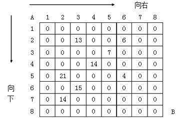
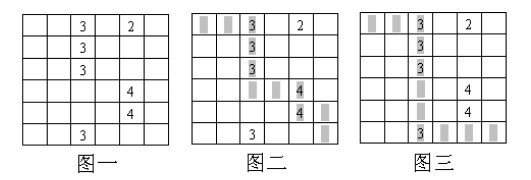
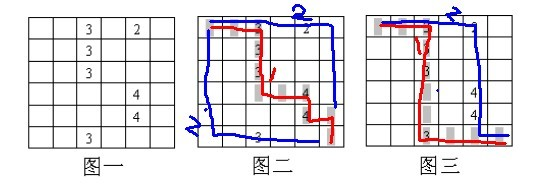

格子取数问题
题目描述
有n*n个格子，每个格子里有正数或者0，从最左上角往最右下角走，只能向下和向右，一共走两次（即从左上角走到右下角走两趟），把所有经过的格子的数加起来，求最大值SUM，且两次如果经过同一个格子，则最后总和SUM中该格子的计数只加一次。

分析与解法
初看到此题，因为要让两次走下来的路径总和最大，读者可能最初想到的思路可能是让每一次的路径都是最优的，即不顾全局，只看局部，让第一次和第二次的路径都是最优。
但问题马上就来了，虽然这一算法保证了连续的两次走法都是最优的，但却不能保证总体最优，相应的反例也不难给出，请看下图：

上图中，图一是原始图，那么我们有以下两种走法可供我们选择：
- 如果按照上面的局部贪优走法，那么第一次势必会如图二那样走，导致的结果是第二次要么取到2，要么取到3，
- 但若不按照上面的局部贪优走法，那么第一次可以如图三那样走，从而第二次走的时候能取到2 4 4，很显然，这种走法求得的最终SUM值更大；
为了便于读者理解，我把上面的走法在图二中标记出来，而把应该正确的走法在上图三中标示出来，如下图所示：

也就是说，上面图二中的走法太追求每一次最优，所以第一次最优，导致第二次将是很差；而图三第一次虽然不是最优，但保证了第二次不差，所以图三的结果优于图二。由此可知不要只顾局部而贪图一时最优，而丧失了全局最优。
局部贪优不行，我们可以考虑穷举，但最终将导致复杂度过高，所以咱们得另寻良策。
为了方便讨论，我们先对矩阵做一个编号，且以5*5的矩阵为例（给这个矩阵起个名字叫M1）：
M1
0 1 2 3 4
1 2 3 4 5
2 3 4 5 6
3 4 5 6 7
4 5 6 7 8
从左上(0)走到右下(8)共需要走8步（2*5-2）。我们设所走的步数为s。因为限定了只能向右和向下走，因此无论如何走，经过8步后（s = 8)都将走到右下。而DP的状态也是依据所走的步数来记录的。
再来分析一下经过其他s步后所处的位置，根据上面的讨论，可以知道：
- 经过8步后，一定处于右下角(8)；
- 那么经过5步后(s = 5)，肯定会处于编号为5的位置；
- 3步后肯定处于编号为3的位置；
- s = 4的时候，处于编号为4的位置，此时对于方格中，共有5（相当于n）个不同的位置，也是所有编号中最多的。
故推广来说，对于n*n的方格，总共需要走2n - 2步，且当s = n - 1时，编号为n个，也是编号数最多的。
如果用DP[s,i,j]来记录2次所走的状态获得的最大值，其中s表示走s步，i和j分别表示在s步后第1趟走的位置和第2趟走的位置。
为了方便描述，再对矩阵做一个编号（给这个矩阵起个名字叫M2）：
M2
0 0 0 0 0
1 1 1 1 1
2 2 2 2 2
3 3 3 3 3
4 4 4 4 4
把之前定的M1矩阵也再贴下：
M1
0 1 2 3 4
1 2 3 4 5
2 3 4 5 6
3 4 5 6 7
4 5 6 7 8
我们先看M1，在经过6步后，肯定处于M1中编号为6的位置。而M1中共有3个编号为6的，它们分别对应M2中的2 3 4。故对于M2来说，假设第1次经过6步走到了M2中的2，第2次经过6步走到了M2中的4，DP[s,i,j] 则对应 DP[6,2,4]。由于s = 2n - 2,0 <= i <= j <= n，所以这个DP共有O(n^3)个状态。
M1
0 1 2 3 4
1 2 3 4 5
2 3 4 5 6
3 4 5 6 7
4 5 6 7 8
再来分析一下状态转移，以DP[6,2,3]为例(就是上面M1中加粗的部分)，可以到达DP[6,2,3]的状态包括DP[5,1,2]，DP[5,1,3]，DP[5,2,2]，DP[5,2,3]。
下面，我们就来看看这几个状态：DP[5,1,2]，DP[5,1,3]，DP[5,2,2]，DP[5,2,3]，用加粗表示位置DP[5,1,2] DP[5,1,3] DP[5,2,2] DP[5,2,3] （加红表示要达到的状态DP[6,2,3]）
0 1 2 3 4 0 1 2 3 4 0 1 2 3 4 0 1 2 3 4
1 2 3 4 5 1 2 3 4 5 1 2 3 4 5 1 2 3 4 5
2 3 4 5 6 2 3 4 5 6 2 3 4 5 6 2 3 4 5 6
3 4 5 6 7 3 4 5 6 7 3 4 5 6 7 3 4 5 6 7
4 5 6 7 8 4 5 6 7 8 4 5 6 7 8 4 5 6 7 8
因此：
DP[6,2,3] = Max(DP[5,1,2] ，DP[5,1,3]，DP[5,2,2]，DP[5,2,3]) + 6,2和6,3格子中对应的数值 （式一）
上面（式一）所示的这个递推看起来没有涉及：“如果两次经过同一个格子，那么该数只加一次的这个条件”，讨论这个条件需要换一个例子，以DP[6,2,2]为例：DP[6,2,2]可以由DP[5,1,1]，DP[5,1,2]，DP[5,2,2]到达，但由于i = j，也就是2次走到同一个格子，那么数值只能加1次。
所以当i = j时，
DP[6,2,2] = Max(DP[5,1,1]，DP[5,1,2]，DP[5,2,2]) + 6,2格子中对应的数值 （式二）
故，综合上述的（式一），（式二）最后的递推式就是
if(i != j)
DP[s, i ,j] = Max(DP[s - 1, i - 1, j - 1], DP[s - 1, i - 1, j], DP[s - 1, i, j - 1], DP[s - 1, i, j]) + W[s,i] + W[s,j]
else
DP[s, i ,j] = Max(DP[s - 1, i - 1, j - 1], DP[s - 1, i - 1, j], DP[s - 1, i, j]) + W[s,i]
其中W[s,i]表示经过s步后，处于i位置，位置i对应的方格中的数字。下一节我们将根据上述DP方程编码实现。
为了便于实现，我们认为所有不能达到的状态的得分都是负无穷，参考代码如下：
|
|
复杂度分析：状态转移最多需要统计4个变量的情况，看做是O(1)的，共有O(n^3)个状态，所以总的时间复杂度是O(n^3)的，且dp数组开了N^3大小，故其空间复杂度亦为O(n^3)。
事实上，空间上可以利用滚动数组优化，由于每一步的递推只跟上1步的情况有关，因此可以循环利用数组，将空间复杂度降为O(n^2)。
即我们在推算dp[step]的时候，只依靠它上一次的状态dp[step - 1]，所以dp数组的第一维，我们只开到2就可以了。即step为奇数时，我们用dp[1][i][j]表示状态，step为偶数我们用dp[0][i][j]表示状态，这样我们只需要O(n^2)的空间，这就是滚动数组的方法。滚动数组写起来并不复杂，只需要对上面的代码稍作修改即可，感兴趣的读者可以自己写代码实现下。
举一反三
1、给定m*n的矩阵，每个位置是一个非负整数，从左上角开始，每次只能朝右和下走，走到右下角，但只走一次，求总和最小的路径。
提示：因为只走一次，所以相对来说比较简单，dp[0, 0]=a[0, 0]，且dp[x, y] = min(dp[x-1, y] + a[x, y]dp[x, y-1] + a[x, y])。
2、给定m*n的矩阵，每个位置是一个整数，从左上角开始，每次只能朝右、上和下走，并且不允许两次进入同一个格子，走到右上角，最小和。
分析：@cpcs ：我们按列dp，假设前一列的最优值已经算好了，一旦往右就回不去了。枚举我们从对固定的(y-1)列，我们已经算好了最优值，我们枚举行x，朝右走到(x,y),然后再从(x,y)朝上走到(x,0)，再从(x,y)朝下走到(x,n-1)，所有这些第y列的值，作为第y列的候选值，取最优。
实际上，我们枚举了进入第y列的位置和在最终停在第y列的位置。这样保证我们不重复经过一个格子，也能保证我们不会往“左”走。